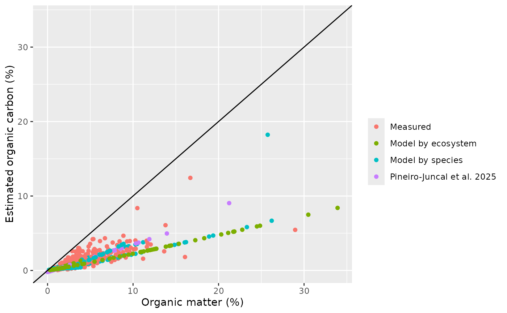

Test differences between observed and extrapolated stocks
Source:R/test_extrapolation.R
test_extrapolation.RdSubset those cores that reach the standardization depth and estimates the stock (observed stock), estimate the stock from the linear relation of organic carbon accumulated mass and depth using the 90, 75, 50 and 25% top length of the indicated standardization depth. Compares the observed stock with the estimated stocks by extrapolation.
Usage
test_extrapolation(
df = NULL,
depth = 100,
core = "core",
mind = "mind_corrected",
maxd = "maxd_corrected",
dbd = "dbd",
oc = "eoc"
)Arguments
- df
A data.frame with, at least, columns: core, mind (minimum depth of the sample), maxd (maximum depth of the sample), dbd (dry bulk density), oc (organic carbon %)
- depth
Number Standardization soil depth, by default 100 cm.
- core
Character Name of the column reporting core ID.
- mind
Character Name of the column reporting the minimum depth of each sample.
- maxd
Character Name of the column reporting the maximum depth of each sample.
- dbd
Character Name of the column reporting dry bulk density.
- oc
Character Name of the column reporting organic carbon concentrations.
Examples
bluecarbon_decompact <- decompact(bluecarbon_data)
#> Warning: Setting compaction = 0 for these cores: Sm_03_04, Sg_10_02, Sg_11_03, Sm_05_01, Sm_06_01
oc <- estimate_oc(bluecarbon_decompact)

#> Warning: The following cores had samples with organic carbon values below the organic carbon range used to built the model: Sg_04_01, Sm_04_03, Sm_04_04, Sm_05_01
#> Warning: The following cores had samples with organic carbon values above the organic carbon range used to built the model: Sg_04_01, Sm_03_01, Sm_04_02, Sm_04_03, Sm_04_04, Sm_05_01
out <- test_extrapolation(oc[[1]])
#> Warning: Removed 4 rows containing non-finite outside the scale range
#> (`stat_boxplot()`).
#> Warning: Removed 4 rows containing missing values or values outside the scale range
#> (`geom_point()`).
#> Warning: Removed 1 row containing missing values or values outside the scale range
#> (`geom_point()`).
#> Warning: Removed 3 rows containing missing values or values outside the scale range
#> (`geom_point()`).